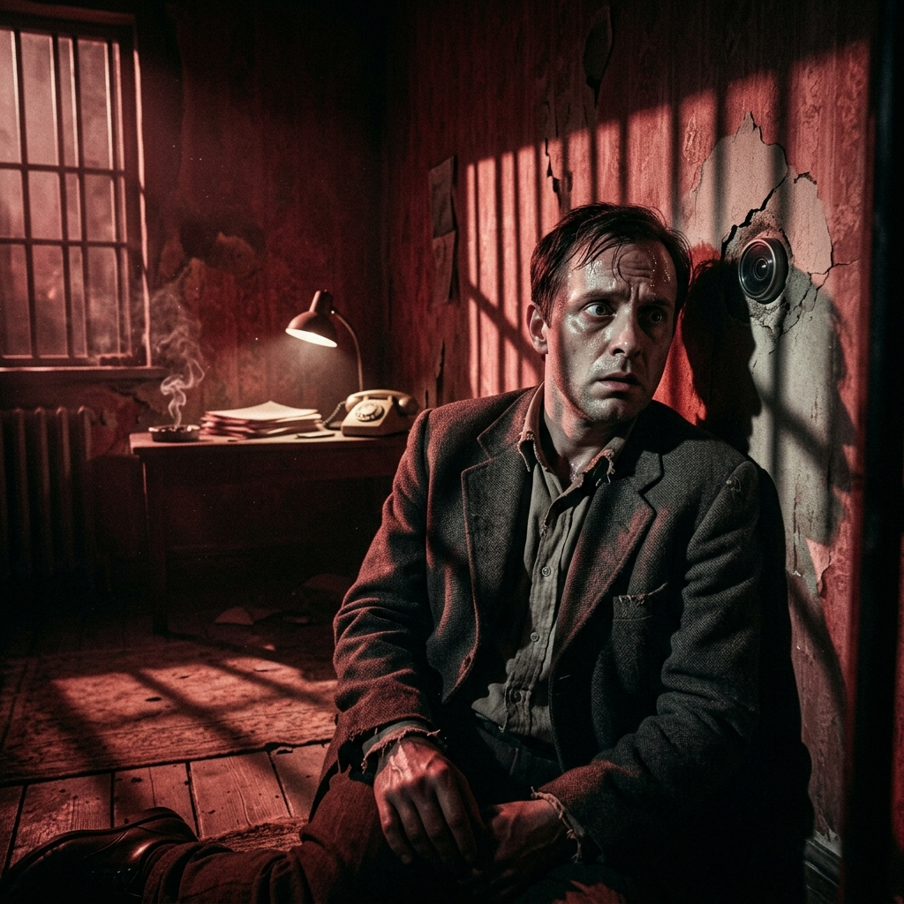
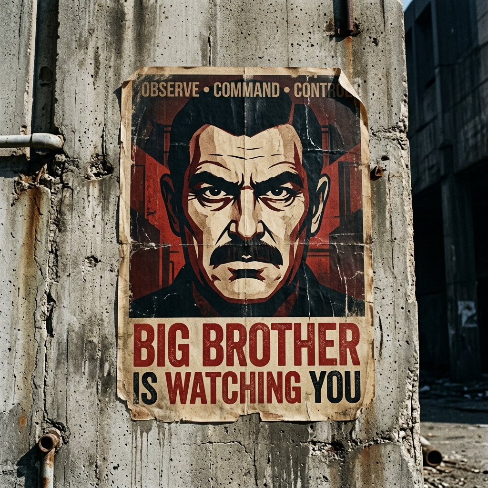
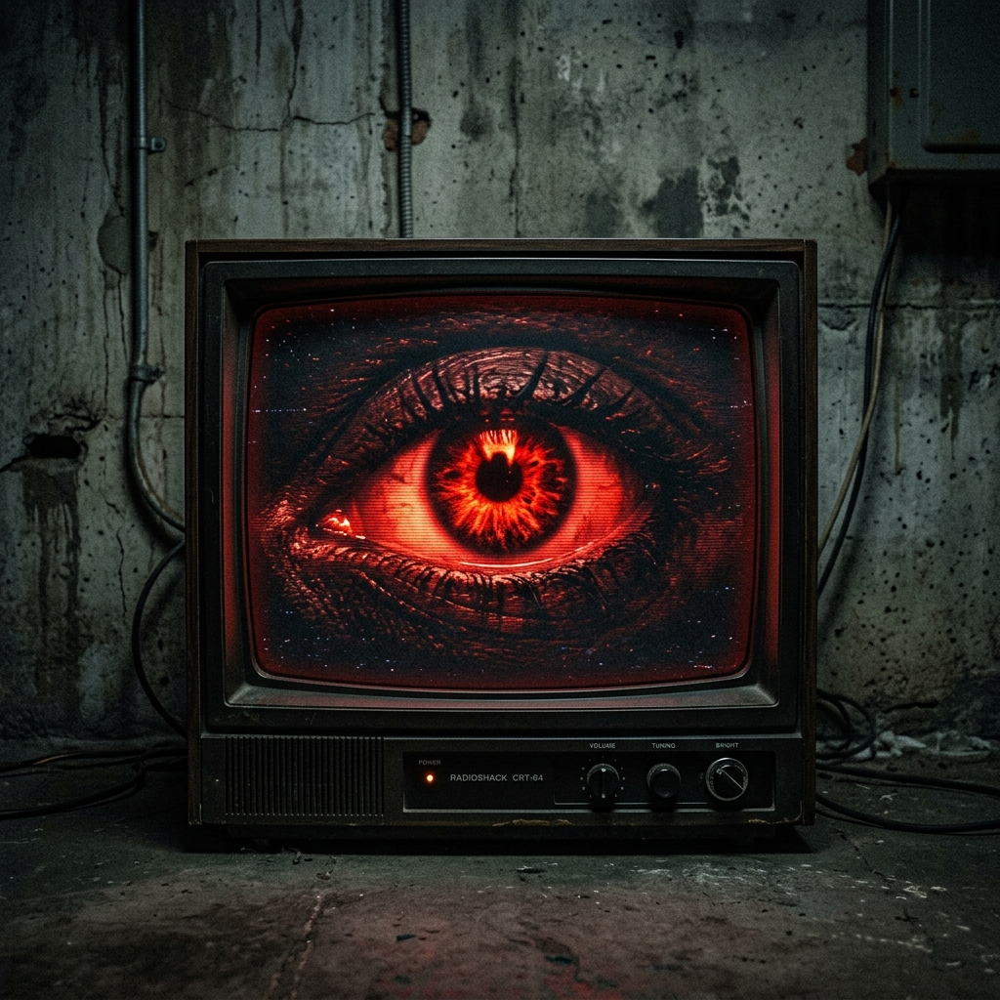
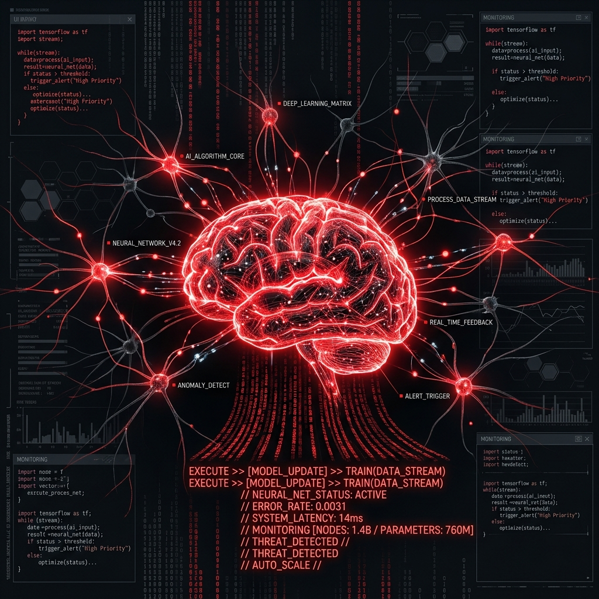
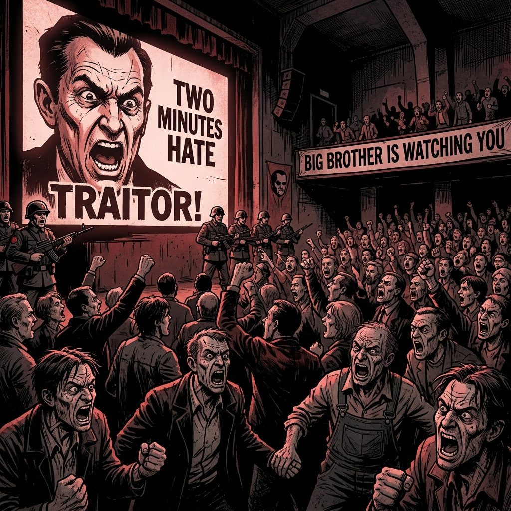
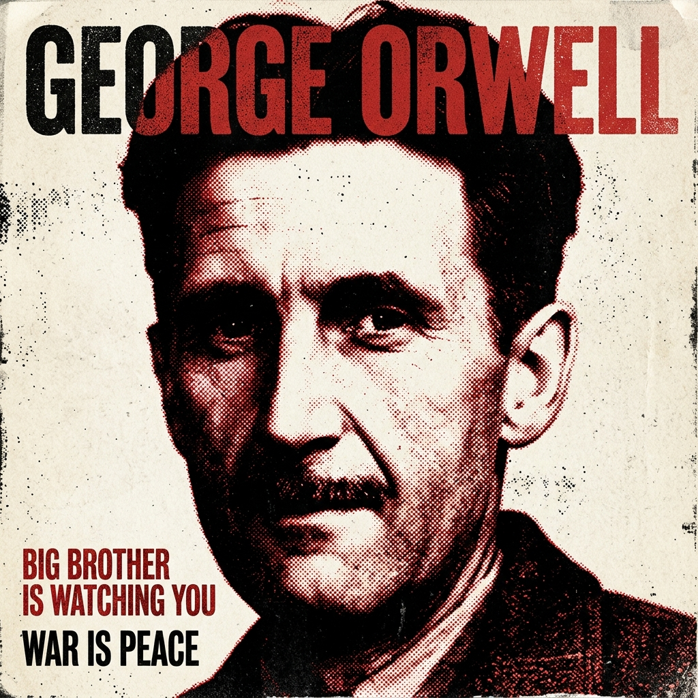

[시스템 알림]
개인 일기 모니터링 모듈이 작동 중입니다. 허용되지 않은 단어(자유, 평화, 혁명, 사랑 등)를 입력하는 것은 심각한 사상죄로 다스려집니다.
[일기장 작성 규칙]
1. 우측 윈도우 메모장에 당신의 솔직한 일기를 적어보세요.
2. 사상경찰의 실시간 사상 단어 자동 검열을 지켜보십시오.
3. 상단 툴바를 이용해 폰트와 크기를 자유롭게 변경하십시오.
사상범은 죽음을 의미하지 않는다. 사상범은 단순히 죽음을 기다리는 상태일 뿐이다.
▶ 당신의 생각을 적어보세요. (예: 자유, 평화, 혁명)
Outer Party
13%Inner Party
2%Proles
85%
사생활이 완벽히 차단된 양방향 감시 및 선전 도구
위치, 대화, 검색 기록을 자발적으로 제공하는 데이터 수집기
당의 권력을 형상화한 절대적이고 오류 없는 지배자

개인의 선호와 행동을 분석하고 예측하여 무의식을 통제하는 보이지 않는 힘

군중의 억압된 불만을 증오의 대상으로 돌려 체제를 결속하는 의식
인터넷 커뮤니티와 SNS에서 발생하는 맹목적인 분노와 사이버 불링
당의 이익에 맞게 과거의 역사와 기록을 조작하는 부서
특정 세력의 이익을 위해 온라인에서 대량으로 유포되는 왜곡된 정보
당의 이념에 반하는 생각을 하는 것만으로도 사형에 처해지는 범죄
알고리즘이 제공하는 정보만 받아들여 확증 편향이 강화되는 현상

GEORGE ORWELL
| CODE NAME | George Orwell (본명: Eric Arthur Blair) |
| LIFE SPAN | 1903.06.25 ~ 1950.01.21 |
| STATUS | Deceased (사상 통제 구역 외 사망) |
| KEY WORKS | 《동물농장》(Animal Farm), 《1984》(Nineteen Eighty-Four) |
조지 오웰은 20세기 영어권 최고의 문명 비판가이자 소설가입니다. 본명은 에릭 아서 블레어(Eric Arthur Blair)로, 전체주의의 폭력성과 감시 사회의 도래를 예견한 명작 《1984》와 《동물농장》을 집필하였습니다.
그는 민주적 사회주의를 지지하는 동시에 파시즘과 스탈린주의 같은 모든 형태의 전제주의를 강력히 고발하였습니다. 《1984》는 그의 생애 마지막 소설로, 역사와 생각마저 철저히 조작당하는 끔찍한 미래를 극도로 긴장감 넘치게 묘사하고 있습니다.
1984
George Orwell
조지 오웰의 《1984》는 절대권력이 모든 것을 통제하는 사회를 그린다. 역사, 언어, 감정마저 통제된 사회에서 개인의 존엄성과 저항 정신이 파멸해가는 과정을 보여준다. 이를 통해 독자에게 자유와 비판적 사고의 중요성을 일깨우고, 현실의 감시 체계를 경고한다.